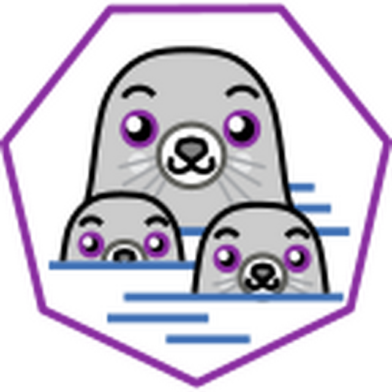
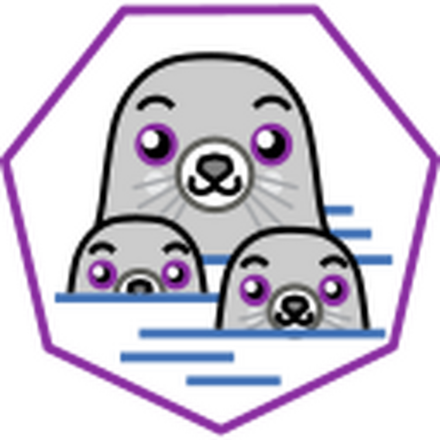

Leandro Stanger
Desenvolvedor e Estudante de Engenharia da Computação!
👨💻 Sobre Mim
📚 Estudante de Engenharia da Computação pela UNOPAR - Universidade Norte do Paraná.
🧗♂️ Estou em constante evolução na área de tecnologia, sempre buscando novos conhecimentos e desafios.
🧠 Apaixonado por programação, tecnologia e aprendizado contínuo. Acredito que a tecnologia tem o poder de transformar o mundo.
🥋 Praticante de Jiu-jitsu, esporte que me ensina disciplina, resiliência e estratégia - qualidades que aplico no desenvolvimento de software.
📄 Currículo
🎯 Objetivo Profissional
Busco uma posição na área de TI como Desenvolvedor ou Analista de Banco de Dados, onde possa aplicar meus conhecimentos em manutenção de computadores e redes, além de continuar desenvolvendo minhas habilidades em suporte técnico, administração de sistemas, desenvolvimento de software e gerenciamento de bancos de dados.
🚀 Desenvolvedor
Interesse em atuar no desenvolvimento de aplicações web e sistemas, utilizando tecnologias modernas e seguindo as melhores práticas de programação.
🗃️ Banco de Dados
Desejo trabalhar com modelagem, administração e otimização de bancos de dados, garantindo a integridade e performance dos sistemas.
🎓 Educação
Graduação em Engenharia de Computação
Unopar
Técnico em Manutenção e Suporte em Informática
AMPLI
ConcluídoCurso de Montagem e Manutenção de Computadores e Redes
YesBras
ConcluídoCurso APP – Administrativo Pessoal e Profissional
Escola de Informática Unisoft
ConcluídoCurso QIT – Qualificação em Informática e Tecnologia
Escola de Informática Unisoft
ConcluídoEnsino Médio
Sesi
Concluído💼 Experiência Profissional
Confecções Vanelise
Auxiliar de Expedição Nível 2 (Tecido Plano)
ago de 2025 - o momento ·
- Promovido para nível 2 com maiores responsabilidades
- Treinamento de novos funcionários
- Gestão avançada de estoque da caixaria
- Controle de qualidade dos processos de expedição
Confecções Vanelise
Auxiliar de Expedição (Tecido Plano)
jan de 2020 - ago de 2025 · 5 anos 8 meses
- Recebimento e organização de paletes de conserto
- Abastecimento de revisão e armazenamento de peças
- Gestão de estoque e organização de materiais
- Controle de qualidade inicial dos produtos
Manutenção de Computadores – Autônomo
Técnico em Manutenção
Jan/2014 – Presente
- Formatação, troca de peças e atualização de software
- Atendimento a clientes e suporte técnico remoto e presencial
- Instalação e configuração de sistemas operacionais
- Manutenção preventiva e corretiva de hardware
🛠️ Habilidades
Técnicas
Interpessoais
🚀 Tecnologias e Ferramentas


 


🏗️ Projetos
📞 Entre em Contato
Estou sempre aberto a novas oportunidades e colaborações.